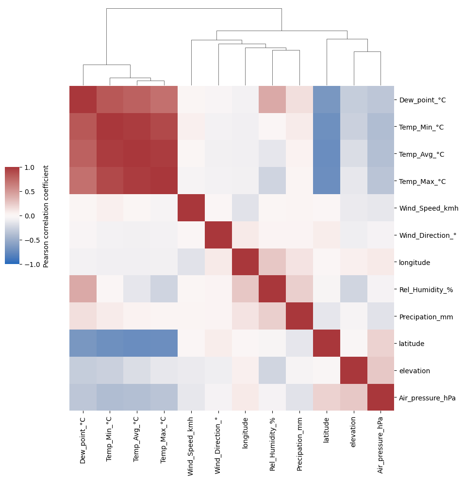
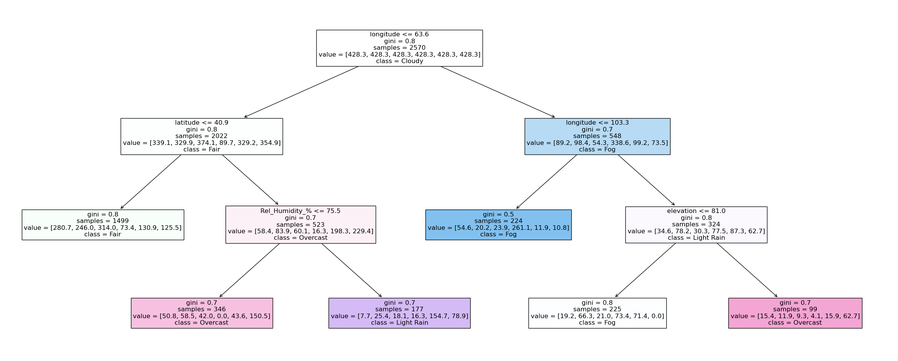
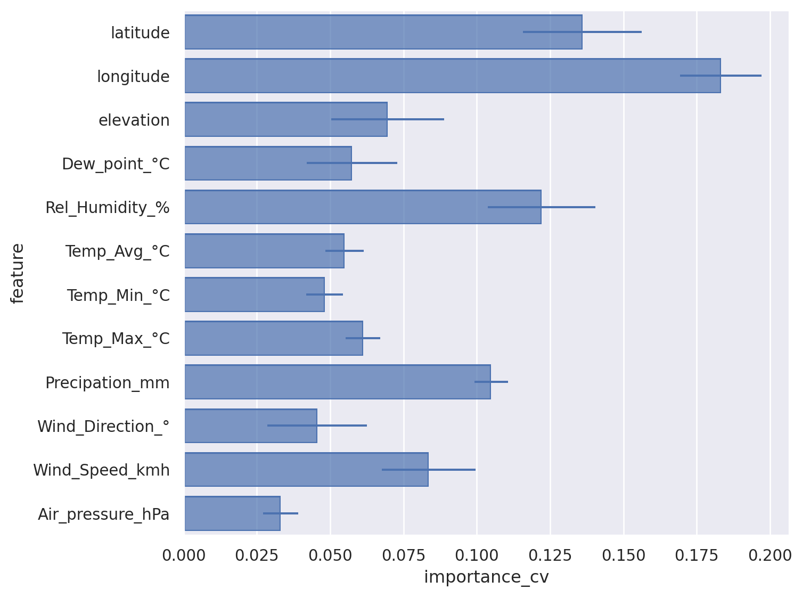
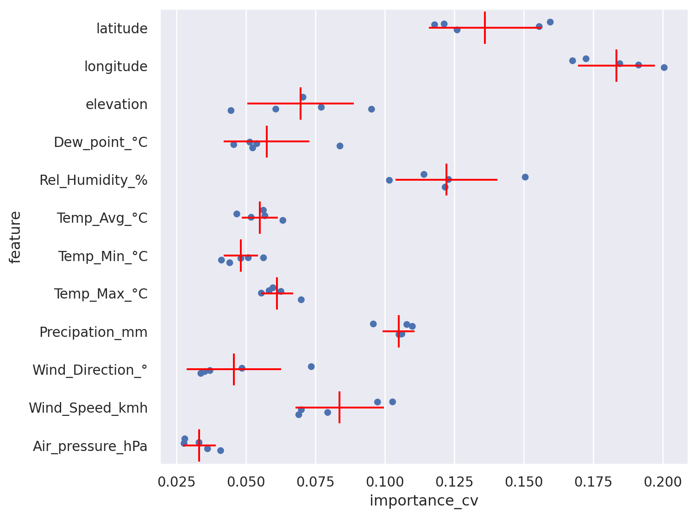

Part 3: Machine Learning insights by Data Viz#
import warnings
warnings.simplefilter(action='ignore', category=FutureWarning) ## suppress annoying deprecation warnings
import pandas as pd
import seaborn.objects as so
import seaborn as sns
import matplotlib.pyplot as plt
from sklearn import tree
from sklearn.ensemble import RandomForestClassifier
from sklearn.metrics import confusion_matrix, ConfusionMatrixDisplay
from sklearn.model_selection import cross_validate
# Renaming columns for better axis labels in plots
col_rename = {
'tavg': 'Temp_Avg_°C',
'tmax': 'Temp_Max_°C',
'tmin': 'Temp_Min_°C',
'rhum': 'Rel_Humidity_%',
'coco': 'Condition',
'wspd': 'Wind_Speed_kmh',
'prcp': 'Precipation_mm',
'wdir': 'Wind_Direction_°',
'pres': 'Air_pressure_hPa',
'dwpt': 'Dew_point_°C'
}
## Reload data
weather_df = pd.read_csv('global_weather.csv', parse_dates=['time'], dtype={'wmo':str, 'station':str})
weather_df = weather_df.dropna()
weather_df.rename(columns=col_rename, inplace=True)
weather_df = weather_df.assign(Continent = weather_df["timezone"].str.split('/').str[0]) ## Get continent from timezone column
Plotting feature correlation: first try#
weather_corr = weather_df.select_dtypes(include='number').corr() ## Calculate (Pearson) correlation for all numerical features in dataframe
f, ax = plt.subplots(figsize=(11, 9))
#!# sns.??(weather_corr, ## seaborn.object no function for heatmaps yet
sns.heatmap(weather_corr, ## seaborn.object no function for heatmaps yet
cbar_kws={"label": "Pearson correlation coefficient", "shrink": 0.6} ## Label adjustments
)
<Axes: >
Problem with standard correlation heatmap: colormap not suitable and features not ordered by similarity#
sns.clustermap(weather_corr, ## Clustermap will cluster the features by similarity
cmap='vlag',center=0, vmin=-1, vmax=1, ## Colormap: correlations range from -1 to +1 and have fixed midpoint at 0
cbar_kws={"label": "Pearson correlation coefficient"}, ## Color legend description
cbar_pos = (0.05, 0.45, 0.03, 0.2) ## Change the weird default position of legend
).ax_row_dendrogram.set_visible(False) ## Dendrogram of feature similarity is identical (symmetric matrix); we can omit it on one side

What can be seen in the correlation heatmap?#
(1) features with (almost) identical information (redundancy)
(2) association of learned embeddings (t-SNE, PCA) with features
ML show case: predict the manuel text annotation of the weather by the numerical features#
weather_df['Condition'].value_counts()
Condition
Cloudy 827
Fair 734
Clear 557
Overcast 239
Light Rain 108
Fog 105
Rain 69
Heavy Rain Shower 60
Heavy Rain 50
Rain Shower 29
Thunderstorm 19
Light Snowfall 11
Snow Shower 4
Sleet 3
Snowfall 3
Heavy Snowfall 3
Heavy Snow Shower 3
Heavy Sleet 1
Name: count, dtype: int64
For simplicity reducing to Top categories#
weather_df_red = weather_df[
weather_df['Condition'].isin(
weather_df['Condition'].value_counts()[0:6].index ## Top categories
)
]
weather_df_red
| name | country | region | wmo | icao | latitude | longitude | elevation | timezone | hourly_start | ... | Rel_Humidity_% | Condition | Temp_Avg_°C | Temp_Min_°C | Temp_Max_°C | Precipation_mm | Wind_Direction_° | Wind_Speed_kmh | Air_pressure_hPa | Continent | |
|---|---|---|---|---|---|---|---|---|---|---|---|---|---|---|---|---|---|---|---|---|---|
| 1 | Peshawar | PK | N | 41530 | OPPS | 34.0167 | 71.5833 | 359.0 | Asia/Karachi | 1944-01-01 | ... | 100.0 | Clear | 10.8 | 9.0 | 12.5 | 65.0 | 12.0 | 11.7 | 1005.5 | Asia |
| 2 | Peshawar | PK | N | 41530 | OPPS | 34.0167 | 71.5833 | 359.0 | Asia/Karachi | 1944-01-01 | ... | 94.0 | Cloudy | 8.9 | 5.5 | 13.0 | 16.0 | 330.0 | 20.4 | 1012.6 | Asia |
| 3 | Peshawar | PK | N | 41530 | OPPS | 34.0167 | 71.5833 | 359.0 | Asia/Karachi | 1944-01-01 | ... | 54.0 | Fair | 11.3 | 4.5 | 18.0 | 0.0 | 270.0 | 14.2 | 1020.1 | Asia |
| 4 | Peshawar | PK | N | 41530 | OPPS | 34.0167 | 71.5833 | 359.0 | Asia/Karachi | 1944-01-01 | ... | 50.0 | Fog | 13.7 | 5.5 | 21.5 | 0.0 | 222.0 | 13.7 | 1019.3 | Asia |
| 5 | Peshawar | PK | N | 41530 | OPPS | 34.0167 | 71.5833 | 359.0 | Asia/Karachi | 1944-01-01 | ... | 51.0 | Fog | 14.9 | 6.0 | 21.5 | 0.0 | 222.0 | 8.1 | 1015.7 | Asia |
| ... | ... | ... | ... | ... | ... | ... | ... | ... | ... | ... | ... | ... | ... | ... | ... | ... | ... | ... | ... | ... | ... |
| 3687 | Fuerteventura / Aeropuerto | ES | CN | 60035 | GCFV | 28.4500 | -13.8667 | 22.0 | Europe/Madrid | 1950-03-27 | ... | 78.0 | Clear | 19.9 | 16.7 | 22.0 | 0.0 | 32.0 | 12.2 | 1018.1 | Europe |
| 3688 | Fuerteventura / Aeropuerto | ES | CN | 60035 | GCFV | 28.4500 | -13.8667 | 22.0 | Europe/Madrid | 1950-03-27 | ... | 57.0 | Fair | 23.0 | 18.8 | 28.0 | 0.0 | 0.0 | 12.5 | 1016.2 | Europe |
| 3689 | Fuerteventura / Aeropuerto | ES | CN | 60035 | GCFV | 28.4500 | -13.8667 | 22.0 | Europe/Madrid | 1950-03-27 | ... | 73.0 | Clear | 21.9 | 20.0 | 26.0 | 0.0 | 331.0 | 27.7 | 1016.2 | Europe |
| 3690 | Fuerteventura / Aeropuerto | ES | CN | 60035 | GCFV | 28.4500 | -13.8667 | 22.0 | Europe/Madrid | 1950-03-27 | ... | 69.0 | Fair | 20.2 | 18.0 | 23.0 | 0.0 | 19.0 | 24.9 | 1017.0 | Europe |
| 3691 | Fuerteventura / Aeropuerto | ES | CN | 60035 | GCFV | 28.4500 | -13.8667 | 22.0 | Europe/Madrid | 1950-03-27 | ... | 47.0 | Fair | 20.2 | 17.4 | 24.0 | 0.0 | 6.0 | 29.7 | 1018.5 | Europe |
2570 rows × 28 columns
X = weather_df_red.select_dtypes(include='number') ## Define features
#!# y = weather_df_red[??] ## Define target variable
y = weather_df_red['Condition'] ## Define target variable
clf = tree.DecisionTreeClassifier(max_depth=5,class_weight="balanced", max_leaf_nodes = 6) ## Define a simple decision tree
clf = clf.fit(X, y) ## training
plt.figure(figsize=(30,12)) ## Plot the full decision tree
anno = tree.plot_tree( clf, ## Decision tree
feature_names=clf.feature_names_in_.tolist(), ## Features names
class_names = clf.classes_.tolist(), ## Weather condition text
filled = True, ## Colored by class decision
impurity =True, ## For simiplicity exclude impurity values at splits
precision=1, ## decimal precision
fontsize=12) ## Fontsize for readibility

Insights into more complex ML models: Random Forest#
Plotting results: confusion matrix#
Important for Confusion Matrix visualization is color + number per entry for pattern exploration and precision
clf_rf = RandomForestClassifier(n_estimators=100, class_weight="balanced", max_leaf_nodes=20) ## What happens if we negelect class imbalance?
#!# clf_rf = RandomForestClassifier(n_estimators=100, class_weight=None, max_leaf_nodes=20) ## What happens if we negelect class imbalance?
output = cross_validate(clf_rf, X, y, cv=5, scoring = 'accuracy', return_estimator =True) ## RandomForest is non-deterministic ML -> Cross-validation for more robust results
clf_rf_1 = output['estimator'][0] ## Select a learned RF from the cross-validation
y_pred = clf_rf_1.predict(X)
labels = clf_rf_1.classes_.tolist()
cm = confusion_matrix(y, y_pred, labels=labels)
fig, ax = plt.subplots(figsize=(12,10))
ConfusionMatrixDisplay(confusion_matrix=cm, display_labels=labels).plot(ax=ax)
<sklearn.metrics._plot.confusion_matrix.ConfusionMatrixDisplay at 0x7fa249222430>
Getting explainability from feature importance#
Extracting importance from learned models across all cross validations for robustness#
feature_importances = pd.DataFrame(X.columns.to_list(), index = X.columns.to_list(), columns=['feature']) ## Empty Data frame definition
for idx,estimator in enumerate(output['estimator']): ## For each tree in RF
feature_importances = feature_importances.join(
pd.DataFrame(estimator.feature_importances_ , ## Calculated feature importance
index = estimator.feature_names_in_.tolist(), ## Feature Names
columns=['importance_cv'+str(idx+1)]) ## Save from which CV split
)
# feature_importances
#!# feature_importances_long = pd.??( feature_importances, stubnames="importance_cv",i="feature",j="cv")
feature_importances_long = pd.wide_to_long( feature_importances, stubnames="importance_cv",i="feature",j="cv")
feature_importances_long.head() ## We need typically long format for plotting in grammar of graphics
| importance_cv | ||
|---|---|---|
| feature | cv | |
| latitude | 1 | 0.124856 |
| longitude | 1 | 0.203709 |
| elevation | 1 | 0.066899 |
| Dew_point_°C | 1 | 0.051925 |
| Rel_Humidity_% | 1 | 0.136801 |
Show importance as bar chart including errorbars#
Trick: flip x and y axis for readibility#
(
#!# so.Plot(feature_importances_long,x=??,y=??)
so.Plot(feature_importances_long,x='importance_cv',y='feature')
.add(so.Bar(), so.Agg()) ## Bar plot showing the average
.add(so.Range(), so.Est(errorbar="sd")) ## Whiskers showing the standard deviation
.layout(size=(8, 6))
)

There are problems with bar charts and errorbars: https://doi.org/10.1371/journal.pbio.1002128#
Better show points/dots for every trained model (sample) and statistics#
(
so.Plot(feature_importances_long,x='importance_cv',y='feature')
.add(so.Dot(pointsize=5), so.Shift(y=.0), so.Jitter(.5)) ## Jitter and Shift avoid overplotting
#!# .add(so.??(color="red"), so.Agg()) ## Show a dash with the average
#!# .add(so.??(color="red"), so.Est(errorbar="sd")) ## Show the range of the standard deviation
.add(so.Dash(color="red"), so.Agg()) ## Show a dash with the average
.add(so.Range(color="red"), so.Est(errorbar="sd")) ## Show the range of the standard deviation
.layout(size=(8, 6))
)
